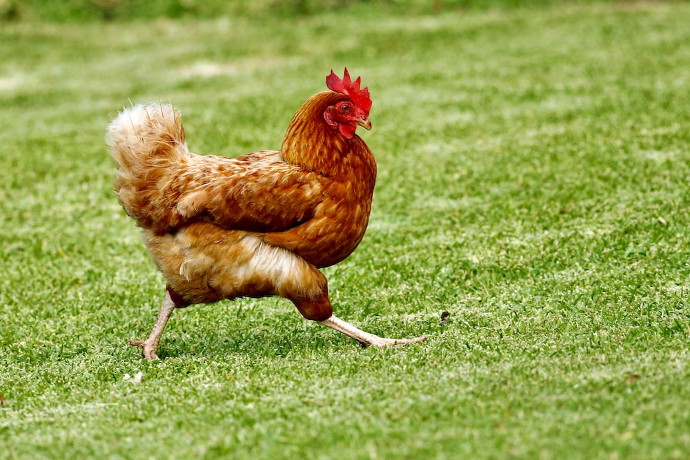

Chicken
Poem on Chicken
The number 2 is “Bring it home”—vital
for me, deadly for you. See, I am
a chef, full of pluck, using only
the freshest of ingredients.
The chicken (Gallus gallus domesticus) is a domesticated red junglefowl species that are originally from Southeast Asia. They have also partially hybridized with other wild species of junglefowls (the grey junglefowl, Ceylon junglefowl, and green junglefowl).[1] Rooster and cock are terms for adult male birds, and a younger male may be called a cockerel. A male that has been castrated is a capon. An adult female bird is called a hen, and a sexually immature female is called a pullet. Humans keep chickens primarily as a source of food (consuming both their meat and eggs) or as pets. Traditionally they were also bred for cockfighting, which is still practiced in some places. Chickens domesticated for meat are broilers and for eggs are layers.
Chickens are one of the most common and widespread domestic animals, with a total population of 23.7 billion as of 2018,[2] up from more than 19 billion in 2011. There are more chickens in the world than any other bird. There are numerous cultural references to chickens—in myth, folklore and religion, and in language and literature.
Terminology
An adult male is a called a cock or (in the United States) a rooster and an adult female is called a hen.[9][10] Other terms are: Biddy: a newly hatched chicken[11][12] Capon: a castrated or neutered male chicken[a] Chick: a young chicken [13] Chook /tʃʊk/: a chicken (Australia/New Zealand, informal)[14] Cockerel: a young male chicken less than a year old[15] Dunghill fowl: a chicken with mixed parentage from different domestic varieties.[16] Pullet: a young female chicken less than a year old.[17] In the poultry industry, a pullet is a sexually immature chicken less than 22 weeks of age. [18] Yardbird: a chicken (southern United States, dialectal)[19]
Etymology
According to Merriam-Webster , the term rooster (i.e. a roosting bird) originated in the mid- or late 18th century as a euphemism to avoid the sexual connotation of the original English cock,[22][23][24] and is widely used throughout North America. Roosting is the action of perching aloft to sleep at night.[25]
Behavior
Social behaviour
Chickens are gregarious birds and live together in flocks. They have a communal approach to the incubation of eggs and raising of young. Individual chickens in a flock will dominate others, establishing a pecking order, with dominant individuals having priority for food access and nesting locations. Removing hens or roosters from a flock causes a temporary disruption to this social order until a new pecking order is established. Adding hens, especially younger birds, to an existing flock can lead to fighting and injury.[citation needed]

Vocalizations
When a rooster finds food, he may call other chickens to eat first. He does this by clucking in a high pitch as well as picking up and dropping the food. This behaviour may also be observed in mother hens to call their chicks and encourage them to eat. A rooster's crowing is a loud and sometimes shrill call and sends a territorial signal to other roosters.[36] However, roosters may also crow in response to sudden disturbances within their surroundings. Hens cluck loudly after laying an egg and also to call their chicks. Chickens also give different warning calls when they sense a predator approaching from the air or on the ground.[37]
Types of Chickens
- Based on Size
- Big Chickens
- Small Chickens
- Based On color
- Black Chickens
- White Chickens
- Not So friendly Chickens
I Am header 4
H2O
1/2 + 1/2 = 1
I am header 5
Entity Codes
1 < 4 = true
& ♠ ♥